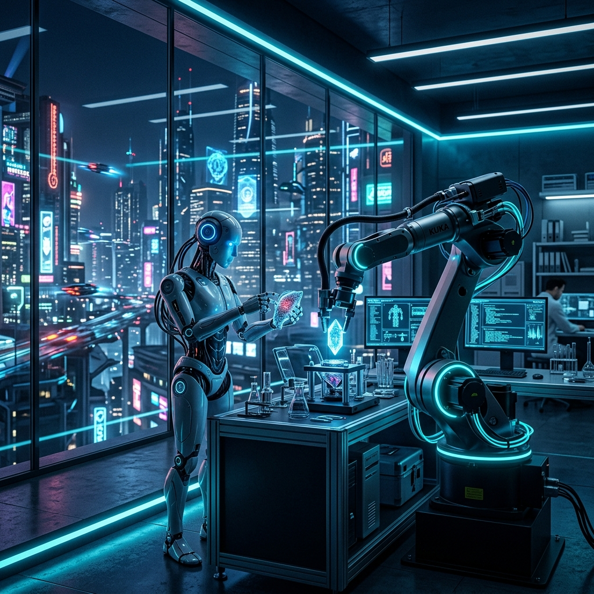

Premium Analysis
로봇 생태계와
대한민국 로봇주의 미래
30년 경력의 로봇 전문 애널리스트가 분석한 로봇 산업의 벨류체인과 핵심 투자 기회. 하드웨어에서 소프트웨어까지, 로봇의 모든 것을 담았습니다.

30년 경력의 로봇 전문 애널리스트가 분석한 로봇 산업의 벨류체인과 핵심 투자 기회. 하드웨어에서 소프트웨어까지, 로봇의 모든 것을 담았습니다.
